Canada
mp <- gg_PopDem_plot("Canada", years = c(1971, 2019))
ggsave("PopDem_02.png", mp, width = 6, height = 4)
mp <- gg_PopDem_anim("Canada")
anim_save("PopDem_gif_02.gif", mp, width = 600, height = 400)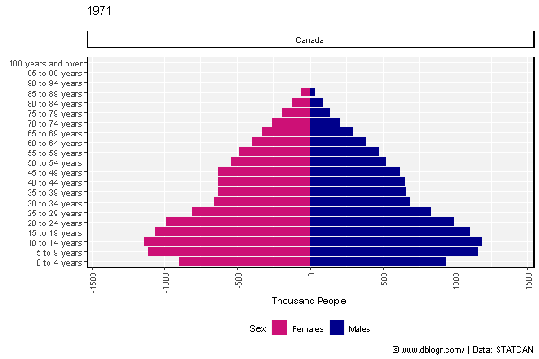
STATCAN data Tables: 17-10-0009-01 & 17-10-0005-01 & 17-10-0008-01
https://www150.statcan.gc.ca/t1/tbl1/en/tv.action?pid=1710000901
https://www150.statcan.gc.ca/t1/tbl1/en/tv.action?pid=1710000501
https://www150.statcan.gc.ca/t1/tbl1/en/cv.action?pid=1710000801
# devtools::install_github("derekmichaelwright/agData")
library(agData) # Loads: tidyverse, ggpubr, ggbeeswarm, ggrepel
library(gganimate)
library(transformr)xx <- agData_STATCAN_Population %>% filter(Month == 1)
mp <- ggplot(xx, aes(x = Year, y = Value / 1000000, color = Area)) +
geom_line() +
facet_wrap(Area ~ ., ncol = 4, scales = "free_y") +
theme_agData(legend.position = "none", rotx = T) +
labs(y = "Million People", x = NULL,
caption = "\xa9 www.dblogr.com/ | Data: STATCAN")
ggsave("PopDem_01.png", mp, width = 10, height = 6)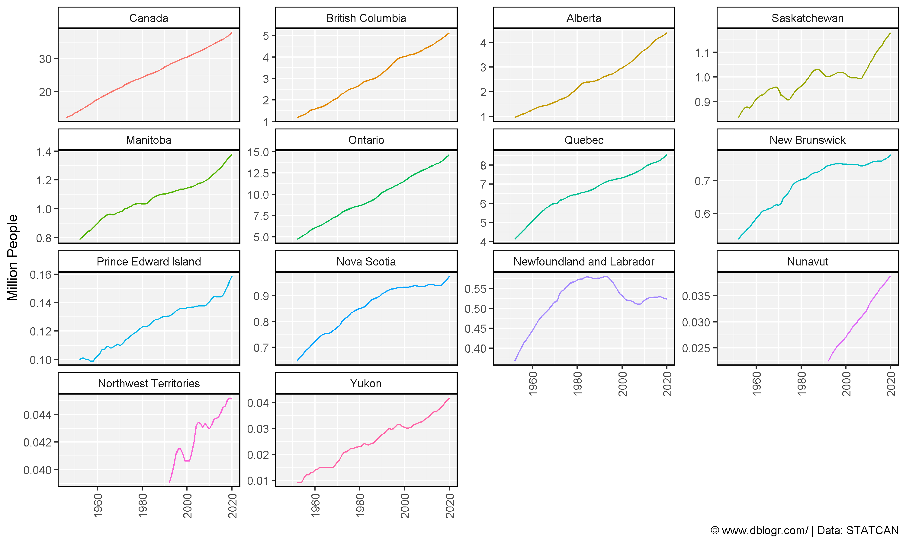
ages <- c("0 to 4 years", "5 to 9 years", "10 to 14 years", "15 to 19 years",
"20 to 24 years", "25 to 29 years", "30 to 34 years", "35 to 39 years",
"40 to 44 years", "45 to 49 years", "50 to 54 years", "55 to 59 years",
"60 to 64 years", "65 to 69 years", "70 to 74 years", "75 to 79 years",
"80 to 84 years", "85 to 89 years", "90 to 94 years", "95 to 99 years" ,
"100 years and over")
gg_PopDem_plot <- function(areas = "Saskatchewan", years = 2019, anim = F) {
# Prep data
xx <- agData_STATCAN_Population_AgeGender %>%
#select(1:25) %>%
#gather(Group, Value, 5:ncol(.)) %>%
filter(Area %in% areas, Year %in% years, Age %in% ages) %>%
mutate(Age = factor(Age, levels = ages),
Value = Value / 1000)
# Plot
mp <- ggplot(xx, aes(y = Value, x = Age, fill = Sex)) +
geom_bar(data = xx %>% filter(Sex == "Males"), stat = "identity", alpha = 0.8) +
geom_bar(data = xx %>% filter(Sex == "Females"),
aes(y = -Value), stat = "identity", alpha = 0.8) +
scale_fill_manual(values = c("deeppink3","darkblue"))
if(anim == T) { mp <- mp + facet_grid(. ~ Area) }
if(anim == F) { mp <- mp + facet_grid(. ~ Year) + labs(subtitle = paste(areas, collapse = " + ")) }
mp +
theme_agData(legend.position = "bottom", rotx = T) +
labs(x = NULL, y = "Thousand People",
caption = "\xa9 www.dblogr.com/ | Data: STATCAN") +
coord_cartesian(ylim = c(-max(xx$Value), max(xx$Value))) +
coord_flip()
}
gg_PopDem_anim <- function(areas = c("Saskatchewan", "Alberta")) {
gg_PopDem_plot(areas = areas, years = 1971:2019, anim = T) +
# Here comes the gganimate specific bits
labs(title = '{round(frame_time)}') +
transition_time(Year) +
ease_aes('linear')
}mp <- gg_PopDem_plot("Canada", years = c(1971, 2019))
ggsave("PopDem_02.png", mp, width = 6, height = 4)
mp <- gg_PopDem_anim("Canada")
anim_save("PopDem_gif_02.gif", mp, width = 600, height = 400)
areas <- c("Ontario", "Quebec","New Brunswick", "Nova Scotia",
"Prince Edward Island", "Newfoundland and Labrador")
mp <- gg_PopDem_plot(areas, years = c(1971, 2019))
ggsave("PopDem_03.png", mp, width = 6, height = 4)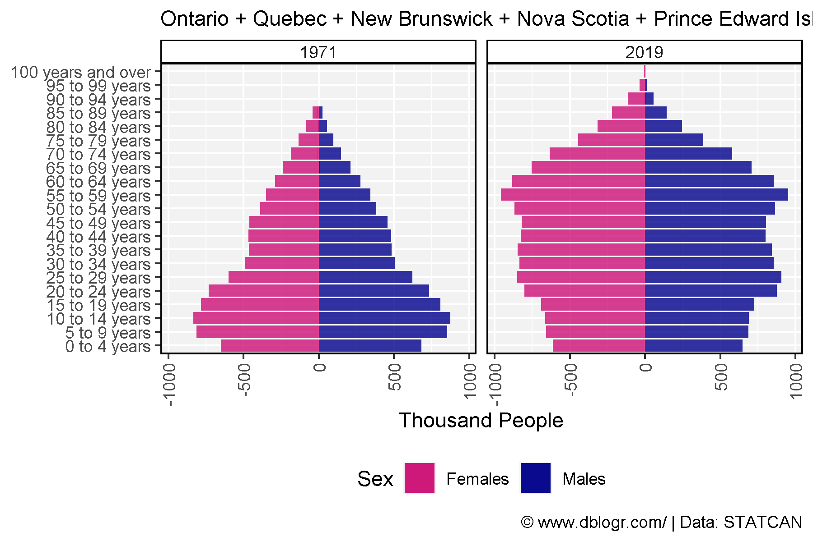
mp <- gg_PopDem_anim(areas)
anim_save(paste0("PopDem_gif_03.gif"), mp, width = 600, height = 400)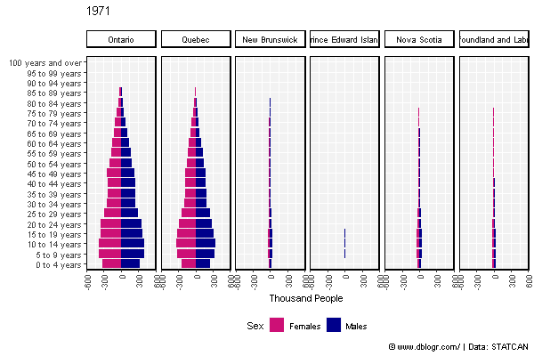
areas <- c("British Columbia", "Alberta","Saskatchewan", "Manitoba",
"Yukon", "Northwest Territories", "Nunavut")
mp <- gg_PopDem_plot(areas, years = c(1975, 2019))
ggsave("PopDem_04.png", mp, width = 6, height = 4)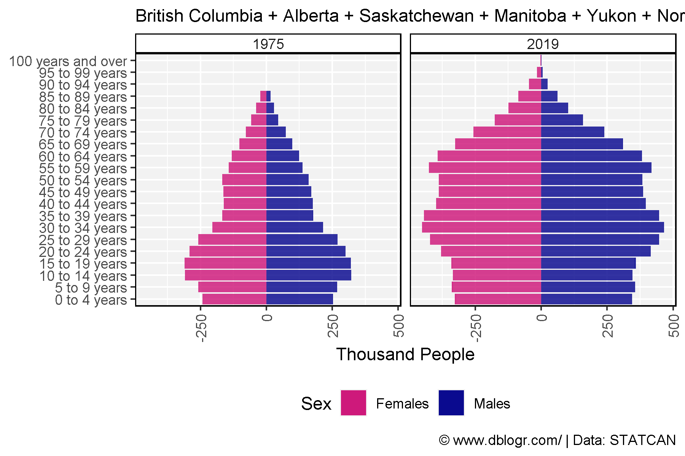
mp <- gg_PopDem_anim(areas)
anim_save(paste0("PopDem_gif_04.gif"), mp, width = 600, height = 400)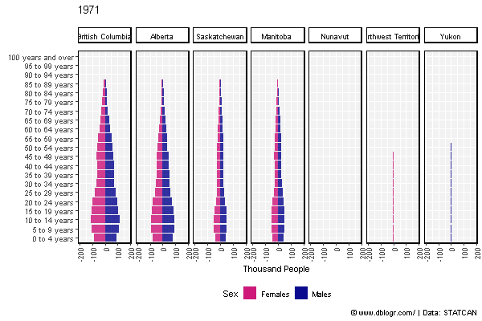
mp <- gg_PopDem_plot("British Columbia", years = c(1971, 2019))
ggsave("PopDem_05.png", mp, width = 6, height = 4)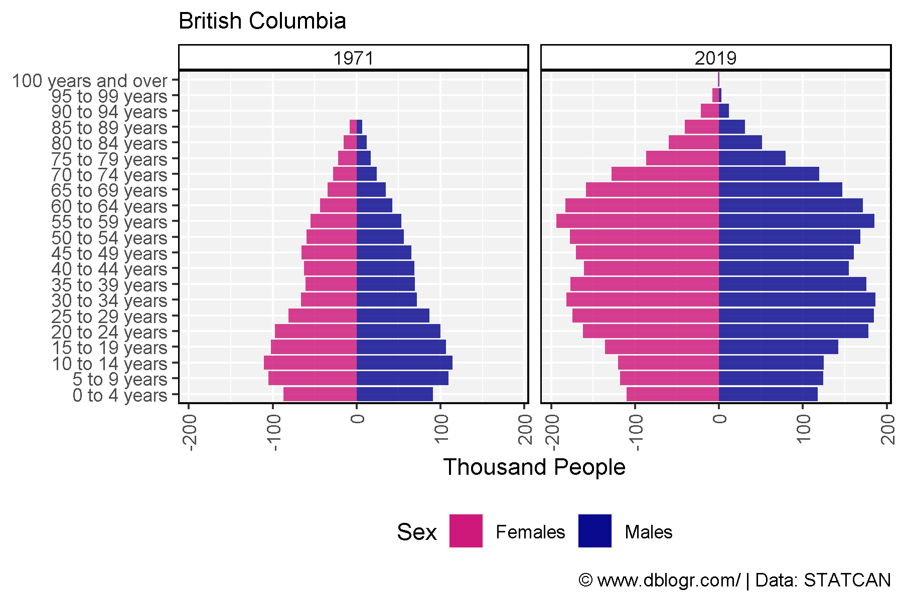
mp <- gg_PopDem_anim("British Columbia")
anim_save(paste0("PopDem_gif_05.gif"), mp, width = 600, height = 400)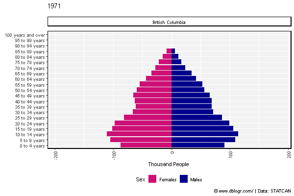
mp <- gg_PopDem_plot("Alberta", years = c(1971, 2019))
ggsave("PopDem_06.png", mp, width = 6, height = 4)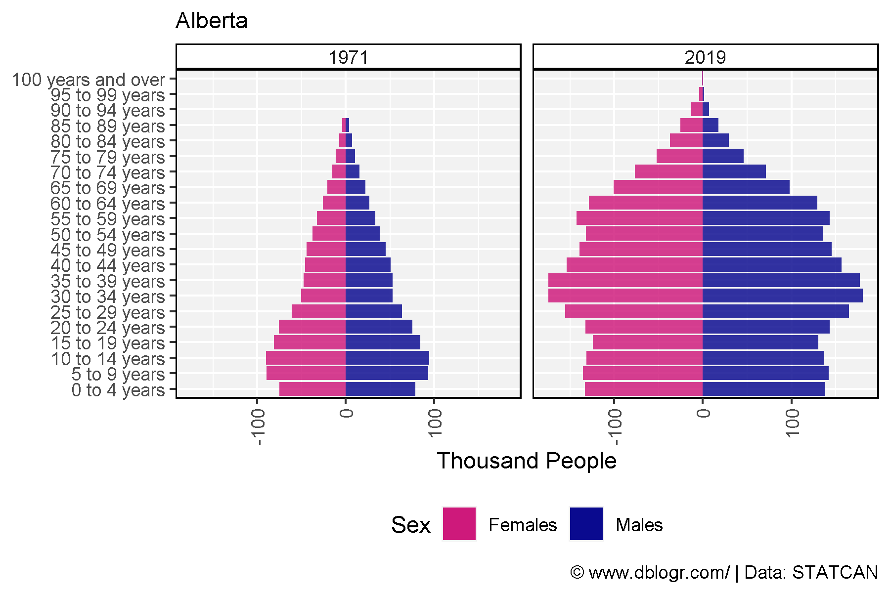
mp <- gg_PopDem_anim("Alberta")
anim_save(paste0("PopDem_gif_06.gif"), mp, width = 600, height = 400)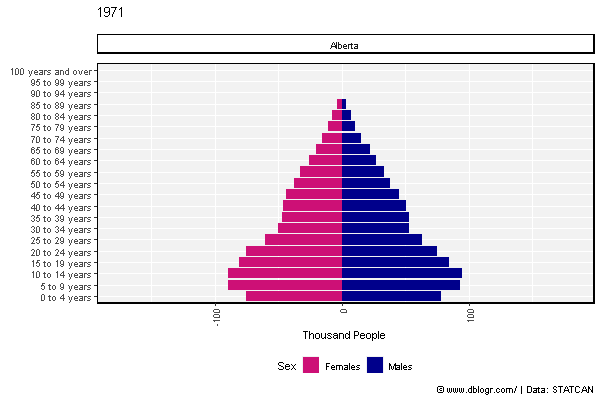
mp <- gg_PopDem_plot("Saskatchewan", years = c(1971, 2019))
ggsave("PopDem_07.png", mp, width = 6, height = 4)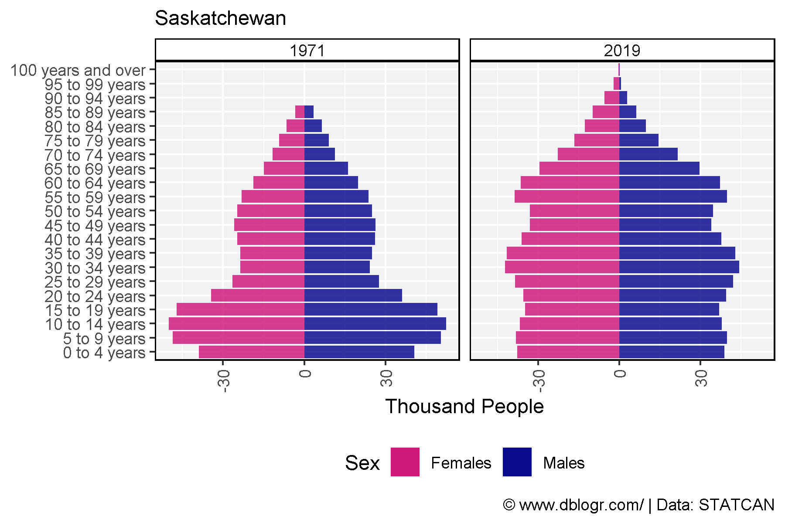
mp <- gg_PopDem_anim("Saskatchewan")
anim_save(paste0("PopDem_gif_07.gif"), mp, width = 600, height = 400)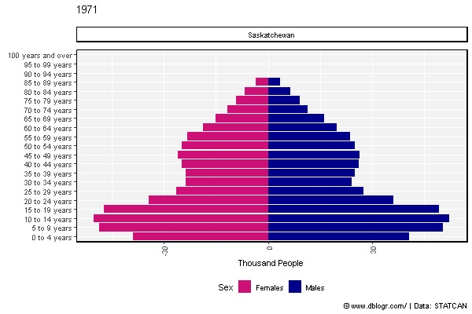
mp <- gg_PopDem_plot("Ontario", years = c(1971, 2019))
ggsave("PopDem_08.png", mp, width = 6, height = 4)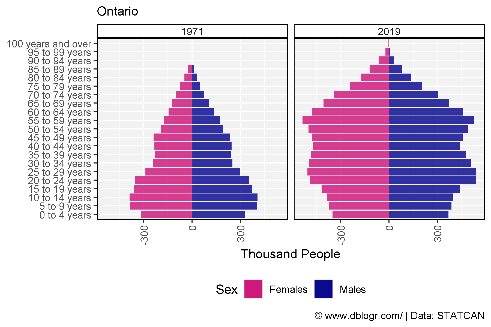
mp <- gg_PopDem_anim("Saskatchewan")
anim_save(paste0("PopDem_gif_08.gif"), mp, width = 600, height = 400)
# Prep data
ages <- c("0 to 4 years", "5 to 9 years", "10 to 14 years", "15 to 19 years",
"20 to 24 years", "25 to 29 years", "30 to 34 years", "35 to 39 years",
"40 to 44 years", "45 to 49 years", "50 to 54 years", "55 to 59 years",
"60 to 64 years", "65 to 69 years", "70 to 74 years", "75 to 79 years",
"80 to 84 years", "85 to 89 years", "90 to 94 years", "95 to 99 years" ,
"100 years and over")
xx <- agData_STATCAN_Population_AgeGender %>%
filter(Area == "Canada", Sex %in% c("Males","Females"), Age %in% ages) %>%
mutate(Age = factor(Age, levels = ages))
# Plot
mp <- ggplot(xx, aes(x = Year, y = Value / 1000000, color = Sex)) +
geom_line(size = 1, alpha = 0.8) +
facet_wrap(Age ~ ., scales = "free_y", ncol = 6) +
scale_color_manual(values = c("deeppink3","darkblue")) +
theme_agData(legend.position = "bottom") +
labs(y = "Million", x = NULL,
caption = "\xa9 www.dblogr.com/ | Data: STATCAN")
ggsave("PopDem_09.png", mp, width = 12, height = 6)
xx <- agData_STATCAN_Population_AgeGender %>%
filter(Area == "Canada", Sex %in% c("Males","Females"), Age %in% ages) %>%
mutate(Age = factor(Age, levels = ages))
# Plot
mp <- ggplot(xx, aes(x = Year, y = Value, color = Sex, group = Sex)) +
geom_line(size = 1, alpha = 0.8) +
scale_color_manual(values = c("deeppink3","darkblue")) +
theme_agData(legend.position = "bottom") +
labs(y = "Million", x = NULL,
caption = "\xa9 www.dblogr.com/ | Data: STATCAN") +
# Here comes the gganimate specific bits
labs(title = '{closest_state}') +
transition_states(Age, transition_length = 1, state_length = 1) +
ease_aes('linear')
anim_save("PopDem_gif_09.gif", mp, width = 600, height = 400)
# Prep data
colors <- c("darkgreen","black","darkred","darkblue")
xx <- agData_STATCAN_Population_Dynamics %>%
filter(Measurement %in% c("Births", "Deaths", "Immigrants", "Emigrants"))
# Plot
mp <- ggplot(xx, aes(x = Year, y = Value / 1000, color = Measurement)) +
geom_line(alpha = 0.8) +
facet_wrap(Area ~., ncol = 5, scales = "free_y") +
scale_color_manual(values = colors) +
theme_agData(legend.position = "bottom", rotx = T) +
labs(y = "Thousand People", x = NULL,
caption = "\xa9 www.dblogr.com/ | Data: STATCAN")
ggsave("PopDem_10.png", mp, width = 12, height = 6)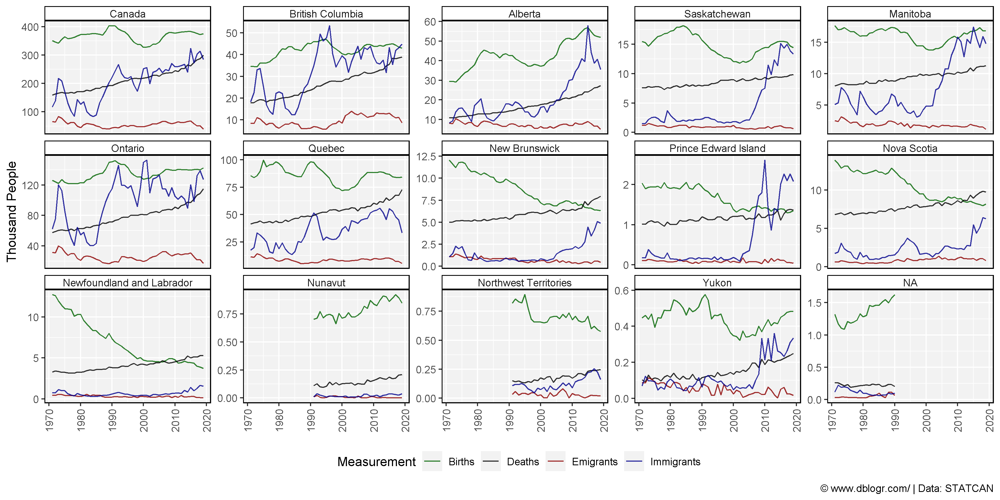
# Prep data
colors <- c("darkorange","darkblue","darkgreen","darkred","red","steelblue")
x1 <- agData_STATCAN_Population %>%
filter(Month ==1) %>%
select(Area, Year, Population=Value)
x2 <- agData_STATCAN_Population_Dynamics %>%
filter(Measurement == "Immigrants") %>%
select(Area, Year, Immigrants=Value)
areas <- c("Quebec", "Ontario", "British Columbia", "Alberta", "Saskatchewan", "Manitoba")
xx <- left_join(x1, x2, by = c("Area", "Year")) %>%
filter(Area %in% areas, !is.na(Immigrants)) %>%
mutate(Value = 1000000 * Immigrants / Population,
Wing = plyr::mapvalues(Area, areas, c("Left","Left","Left","Right","Right","Right")))
# Plot
mp <- ggplot(xx, aes(x = Year, y = Value, color = Area)) +
geom_line(alpha = 0.5) +
geom_smooth(se = F) +
facet_grid(. ~ Wing) +
scale_x_continuous(breaks = seq(1975, 2015, 10)) +
scale_color_manual(values = colors) +
theme_agData() +
labs(title = "Immigration Rates", x = NULL,
y = "Immigrants per Million People",
caption = "\xa9 www.dblogr.com/ | Data: STATCAN")
ggsave("PopDem_11.png", mp, width = 8, height = 4)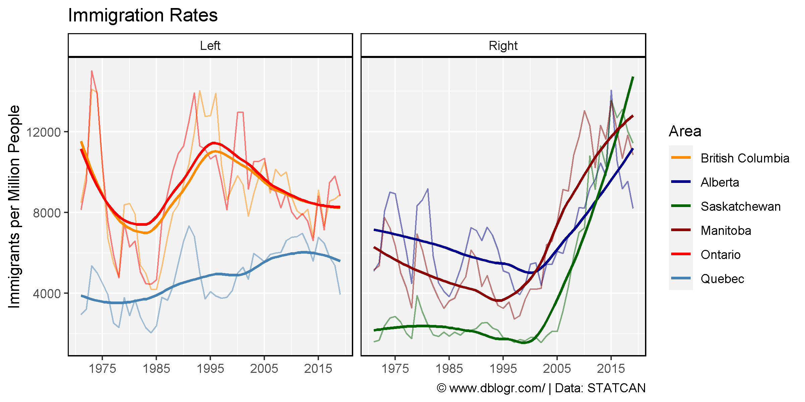
© Derek Michael Wright www.dblogr.com/